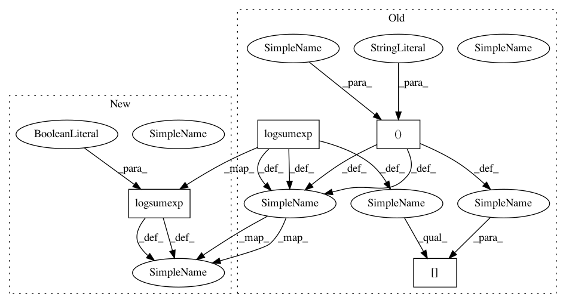

e8caea8ea26a18f93c49ceb6e8d9a48403ca9e30,lxmls/deep_learning/numpy_models/mlp.py,NumpyMLP,log_forward,#NumpyMLP#,43
Before Change
z = np.dot(tilde_z, weight.T) + bias
// Softmax is computed in log-domain to prevent underflow/overflow
log_tilde_z = z - logsumexp(z, axis=1)[:, None]
return log_tilde_z, layer_inputs
def cross_entropy_loss(self, input, output):
After Change
z = np.dot(tilde_z, weight.T) + bias
// Softmax is computed in log-domain to prevent underflow/overflow
log_tilde_z = z - logsumexp(z, axis=1, keepdims=True)
return log_tilde_z, layer_inputs
def cross_entropy_loss(self, input, output):
In pattern: SUPERPATTERN
Frequency: 3
Non-data size: 4
Instances
Project Name: LxMLS/lxmls-toolkit
Commit Name: e8caea8ea26a18f93c49ceb6e8d9a48403ca9e30
Time: 2018-02-12
Author: ramon@astudillo.com
File Name: lxmls/deep_learning/numpy_models/mlp.py
Class Name: NumpyMLP
Method Name: log_forward
Project Name: LxMLS/lxmls-toolkit
Commit Name: e8caea8ea26a18f93c49ceb6e8d9a48403ca9e30
Time: 2018-02-12
Author: ramon@astudillo.com
File Name: lxmls/deep_learning/numpy_models/rnn.py
Class Name: NumpyRNN
Method Name: log_forward
Project Name: LxMLS/lxmls-toolkit
Commit Name: e8caea8ea26a18f93c49ceb6e8d9a48403ca9e30
Time: 2018-02-12
Author: ramon@astudillo.com
File Name: lxmls/deep_learning/numpy_models/log_linear.py
Class Name: NumpyLogLinear
Method Name: log_forward